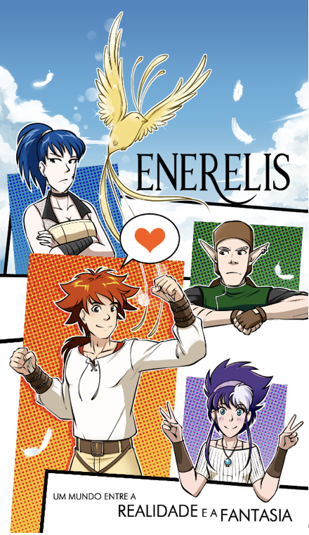
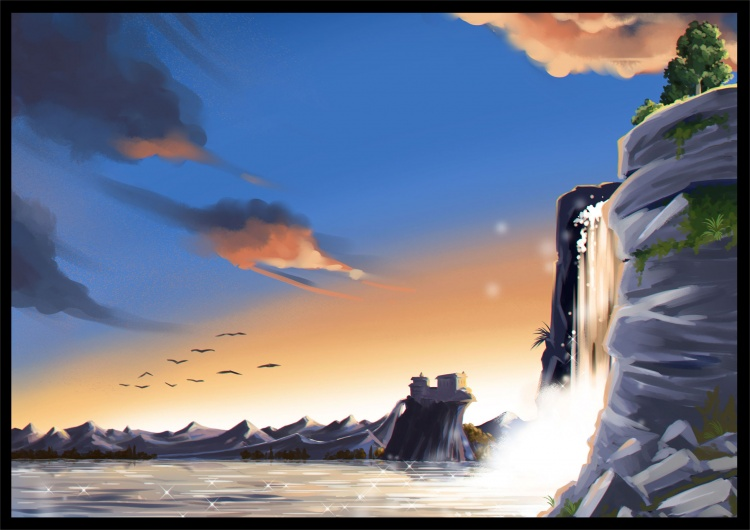

BANDA DESENHADA PORTUGUESA · FANTASIA ÉPICA
Um mundo novo.
Uma história para viver.
Magia, amizade e segredos. Entra em Enerelis e acompanha a jornada de Eyren Caeli, nas páginas criadas por Patrícia Costa.


COMEÇA AQUI · VOLUME 01
Primeira visita a Enerelis?
Começa por Prelúdio, o primeiro volume da coleção, e acompanha a história pela ordem dos livros.
Começar por Prelúdio →
AS CRÓNICAS
Um universo que cresce
página a página.
Enerelis é um dos três mundos paralelos à Terra. As forças de Nox e Aether dão origem a povos, criaturas e capacidades extraordinárias. É neste cenário que Eyren inicia uma jornada de descoberta, crescimento e escolhas difíceis.
Crónicas de Enerelis é uma série de fantasia épica de edição independente, inspirada na linguagem visual do manga. Uma história para descobrir ao ritmo de cada volume.
Descobrir a coleção ↗